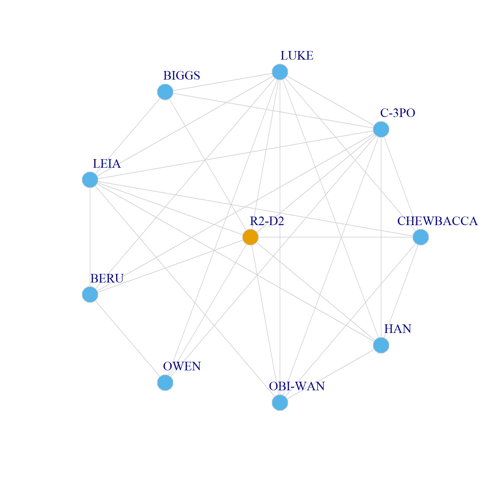

Analyzing Ego Networks
Ego Networks and Ego Network Data
An ego-network, is just a subgraph of a larger network that includes a node of interest (“ego”), all of the connections between ego and their neighbors (called “alters”) and usually all of the connections between each of the alters.
Ego network data is social network data collected in such way (e.g., using standard social survey techniques) that you capture the ego networks of some set of people, usually a convenience sample or, more rarely, a probability sample of some population.
Once you have ego network data you can analyze each ego graph using the standard techniques we learned so far (if you are only interested in the structural characteristics of the ego graph).
If you have attributes on each alter, you can alternatively compute measures of diversity to or homophily to get a sense of how likely ego is to connect to similar or diverse others.
The Clustering Coefficient
Perhaps the most basic structural characteristic of an ego network is the density of the subgraph formed by all of the connections between the alters. This is called ego’s clustering coefficient. Let’s see how it works:
As we said an ego graph is just a subgraph centered on a particular actor. So R2-D2’s ego graph is just:
And we can just plot it like we would any igraph object:
V(r2d2)$color <- c(1, rep(2, length(N)))
plot(r2d2,
vertex.size=10, vertex.frame.color="lightgray",
vertex.label.dist=2, edge.curved=0.2,
layout = layout_(r2d2, as_star()),
vertex.label.cex = 1.25, edge.color = "lightgray")
Note that we use the as_star() option for the layout, so that the ego is put in the center of the star graph surrounded by their alters.
R2-D2’s clustering coefficient is just the density of the graph that includes only the alters:
The clustering coefficient \(C_i\) for an ego \(i\) ranges from zero to one. \(C = 0\) means that none of ego’s alters are connected to one another and \(C = 1\) means that all of ego’s alters are connected to one another. In this case, \(C = 0.67\) means that 67% of R2-D2’s alters are connected (co-appear in scenes) with one another.
Typically we would want to compute the clustering coefficient of every node in a graph. This can be done using our trusty lapply and sapply meta-functions:
create.ego <- function(x, w) {
alter.net <- subgraph(w, neighbors(w, x))
return(alter.net)
}
ego.graphs <- lapply(V(g)$name, create.ego, w = g)
head(ego.graphs)[[1]]
IGRAPH 81e8e17 UNW- 9 24 -- Episode IV – A New Hope
+ attr: name (g/c), name (v/c), height (v/n), mass (v/n), hair_color
| (v/c), skin_color (v/c), eye_color (v/c), birth_year (v/n), sex
| (v/c), homeworld (v/c), species (v/c), weight (e/n)
+ edges from 81e8e17 (vertex names):
[1] CHEWBACCA--C-3PO CHEWBACCA--LUKE C-3PO --LUKE C-3PO --BIGGS
[5] LUKE --BIGGS CHEWBACCA--LEIA C-3PO --LEIA LUKE --LEIA
[9] BIGGS --LEIA C-3PO --BERU LUKE --BERU LEIA --BERU
[13] C-3PO --OWEN LUKE --OWEN BERU --OWEN CHEWBACCA--OBI-WAN
[17] C-3PO --OBI-WAN LUKE --OBI-WAN LEIA --OBI-WAN CHEWBACCA--HAN
[21] C-3PO --HAN LUKE --HAN LEIA --HAN OBI-WAN --HAN
[[2]]
IGRAPH 81e94cb UNW- 6 15 -- Episode IV – A New Hope
+ attr: name (g/c), name (v/c), height (v/n), mass (v/n), hair_color
| (v/c), skin_color (v/c), eye_color (v/c), birth_year (v/n), sex
| (v/c), homeworld (v/c), species (v/c), weight (e/n)
+ edges from 81e94cb (vertex names):
[1] R2-D2 --C-3PO R2-D2 --LUKE C-3PO --LUKE R2-D2 --LEIA
[5] C-3PO --LEIA LUKE --LEIA R2-D2 --OBI-WAN C-3PO --OBI-WAN
[9] LUKE --OBI-WAN LEIA --OBI-WAN R2-D2 --HAN C-3PO --HAN
[13] LUKE --HAN LEIA --HAN OBI-WAN--HAN
[[3]]
IGRAPH 81e9603 UNW- 10 27 -- Episode IV – A New Hope
+ attr: name (g/c), name (v/c), height (v/n), mass (v/n), hair_color
| (v/c), skin_color (v/c), eye_color (v/c), birth_year (v/n), sex
| (v/c), homeworld (v/c), species (v/c), weight (e/n)
+ edges from 81e9603 (vertex names):
[1] R2-D2 --CHEWBACCA R2-D2 --LUKE CHEWBACCA--LUKE
[4] R2-D2 --BIGGS LUKE --BIGGS R2-D2 --LEIA
[7] CHEWBACCA--LEIA LUKE --LEIA BIGGS --LEIA
[10] R2-D2 --BERU LUKE --BERU LEIA --BERU
[13] R2-D2 --OWEN LUKE --OWEN BERU --OWEN
[16] R2-D2 --OBI-WAN CHEWBACCA--OBI-WAN LUKE --OBI-WAN
+ ... omitted several edges
[[4]]
IGRAPH 81e971e UNW- 15 36 -- Episode IV – A New Hope
+ attr: name (g/c), name (v/c), height (v/n), mass (v/n), hair_color
| (v/c), skin_color (v/c), eye_color (v/c), birth_year (v/n), sex
| (v/c), homeworld (v/c), species (v/c), weight (e/n)
+ edges from 81e971e (vertex names):
[1] R2-D2 --CHEWBACCA R2-D2 --C-3PO R2-D2 --BERU
[4] R2-D2 --OWEN R2-D2 --OBI-WAN R2-D2 --LEIA
[7] R2-D2 --BIGGS R2-D2 --HAN CHEWBACCA--OBI-WAN
[10] CHEWBACCA--C-3PO CHEWBACCA--HAN CHEWBACCA--LEIA
[13] CAMIE --BIGGS BERU --OWEN C-3PO --BERU
[16] C-3PO --OWEN C-3PO --LEIA LEIA --BERU
+ ... omitted several edges
[[5]]
IGRAPH 81e9826 UNW- 4 4 -- Episode IV – A New Hope
+ attr: name (g/c), name (v/c), height (v/n), mass (v/n), hair_color
| (v/c), skin_color (v/c), eye_color (v/c), birth_year (v/n), sex
| (v/c), homeworld (v/c), species (v/c), weight (e/n)
+ edges from 81e9826 (vertex names):
[1] LEIA --OBI-WAN LEIA --MOTTI LEIA --TARKIN MOTTI--TARKIN
[[6]]
IGRAPH 81e9930 UNW- 2 1 -- Episode IV – A New Hope
+ attr: name (g/c), name (v/c), height (v/n), mass (v/n), hair_color
| (v/c), skin_color (v/c), eye_color (v/c), birth_year (v/n), sex
| (v/c), homeworld (v/c), species (v/c), weight (e/n)
+ edge from 81e9930 (vertex names):
[1] LUKE--BIGGSFirst, we turn the code we used to find R2-D2’s ego graph into a function, then we apply the function to each node in the network. The result is a list object with \(|V| = 21\) ego subgraphs composed of each node’s alters and their connections.
Now, to find out the clustering coefficient of each node, we just type:
R2-D2 CHEWBACCA C-3PO LUKE DARTH VADER CAMIE
0.67 1.00 0.60 0.34 0.67 1.00
BIGGS LEIA BERU OWEN OBI-WAN MOTTI
0.54 0.42 0.90 1.00 0.76 1.00
TARKIN HAN GREEDO JABBA DODONNA GOLD LEADER
1.00 0.54 NaN NaN 1.00 0.80
WEDGE RED LEADER RED TEN
0.80 0.57 1.00 Note we have a couple of NaN values in the slots corresponding to Greedo and Jabba in the clustering coefficient vector.
Let’s check out why:
R2-D2 CHEWBACCA C-3PO LUKE DARTH VADER CAMIE
9 6 10 15 4 2
BIGGS LEIA BERU OWEN OBI-WAN MOTTI
8 12 5 4 7 3
TARKIN HAN GREEDO JABBA DODONNA GOLD LEADER
3 8 1 1 3 5
WEDGE RED LEADER RED TEN
5 7 2 Here we see the problem is that both Greedo and Jabba are singleton nodes (with degree equal to one), so it doesn’t make sense to analyze their clustering coefficients because their ego graph is just an isolated node!
We can just drop them and re-analyze:
g <- subgraph(g, degree(g)> 1)
ego.graphs <- lapply(V(g)$name, create.ego, w = g)
C <- round(sapply(ego.graphs, edge_density), 2)
names(C) <- V(g)$name
C R2-D2 CHEWBACCA C-3PO LUKE DARTH VADER CAMIE
0.67 1.00 0.60 0.34 0.67 1.00
BIGGS LEIA BERU OWEN OBI-WAN MOTTI
0.54 0.42 0.90 1.00 0.76 1.00
TARKIN HAN DODONNA GOLD LEADER WEDGE RED LEADER
1.00 1.00 1.00 0.80 0.80 0.57
RED TEN
1.00 Much better!
Note that in this analysis, Luke has the lowest clustering coefficient (\(C = 0.34\)) this usually indicates an ego whose alters are partitioned into distinct clusters (and hence they are not connected to one another), and ego is a mediator or broker between those clusters.
Let’s see what that looks like:
set.seed(456)
luke.alters <- subgraph(g, neighbors(g, "LUKE"))
V(luke.alters)$color <- cluster_leading_eigen(luke.alters)$membership
plot(luke.alters,
vertex.size=5, vertex.frame.color="lightgray",
vertex.label.dist=2, edge.curved=0.2,
vertex.label.cex = 0.75, edge.color = "lightgray")
Note that in the ego graph that includes ego, each connected alter is a triangle in the ego graph. So the clustering coefficient is simply a count of the number of undirected triangles that are centered on ego, or the number of cycles of length three centered on ego.
So that means that the diagonals of the cube of the adjacency matrix also contain the information needed to compute the clustering coefficient:
R2-D2 CHEWBACCA C-3PO LUKE DARTH VADER CAMIE
48 30 54 72 8 2
BIGGS LEIA BERU OWEN OBI-WAN MOTTI
30 56 18 12 32 6
TARKIN HAN DODONNA GOLD LEADER WEDGE RED LEADER
6 30 6 16 16 24
RED TEN
2 So all we need to do is divide these numbers by the maximum possible number of undirected triangles that could be centered on a node, which is \(k_i(k_i - 1)\) where \(k_i\) is ego’s degree:
R2-D2 CHEWBACCA C-3PO LUKE DARTH VADER CAMIE
0.67 1.00 0.60 0.34 0.67 1.00
BIGGS LEIA BERU OWEN OBI-WAN MOTTI
0.54 0.42 0.90 1.00 0.76 1.00
TARKIN HAN DODONNA GOLD LEADER WEDGE RED LEADER
1.00 1.00 1.00 0.80 0.80 0.57
RED TEN
1.00 Which gives us the answer as before!
Finally, from each ego’s clustering coefficient (sometimes called the local clustering coefficient of each node) we can compute the graph’s global clustering coefficient which is just the average this quantity across each node in the graph:
\[ C(G) = \frac{1}{N}\sum_iC_i \]
In R:
Which indicates a fairly clustered graph.
In igraph we can use the function transitivity to compute the local and global clustering coefficients, which can be specified using the argument type. For the local version, the function also expects a list of vertices:
R2-D2 CHEWBACCA C-3PO LUKE DARTH VADER CAMIE
0.67 1.00 0.60 0.34 0.67 1.00
BIGGS LEIA BERU OWEN OBI-WAN MOTTI
0.54 0.42 0.90 1.00 0.76 1.00
TARKIN HAN DODONNA GOLD LEADER WEDGE RED LEADER
1.00 1.00 1.00 0.80 0.80 0.57
RED TEN
1.00 And the graph’s global clustering is: